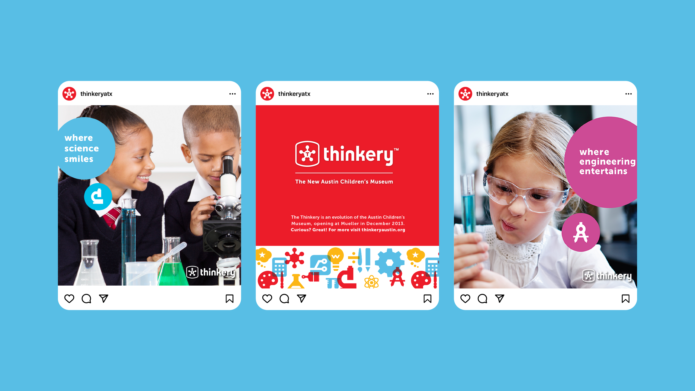
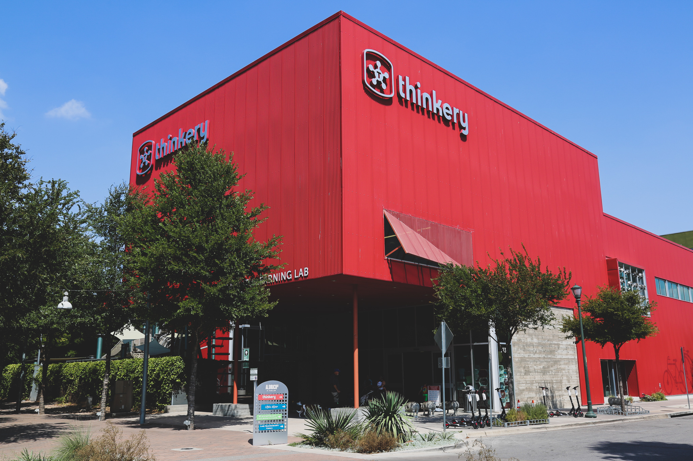
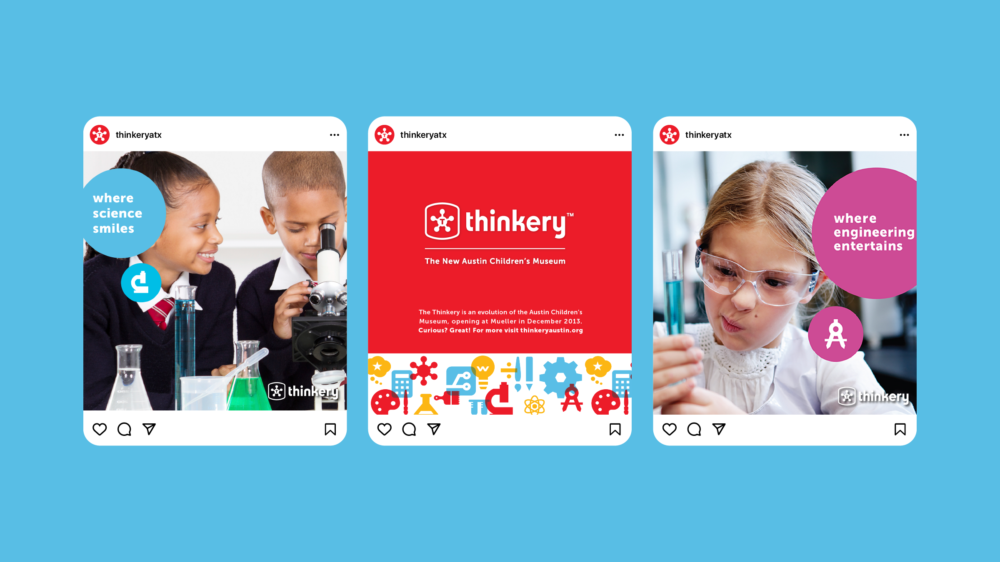
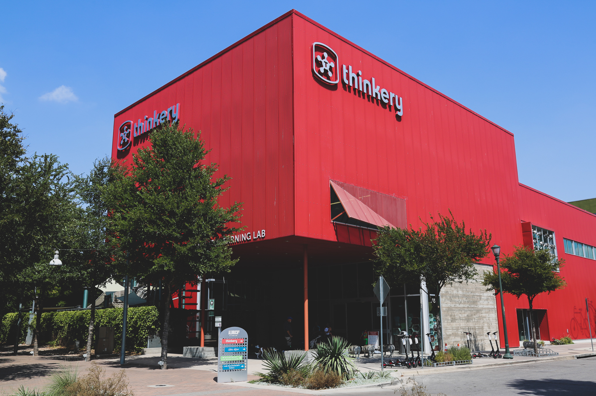
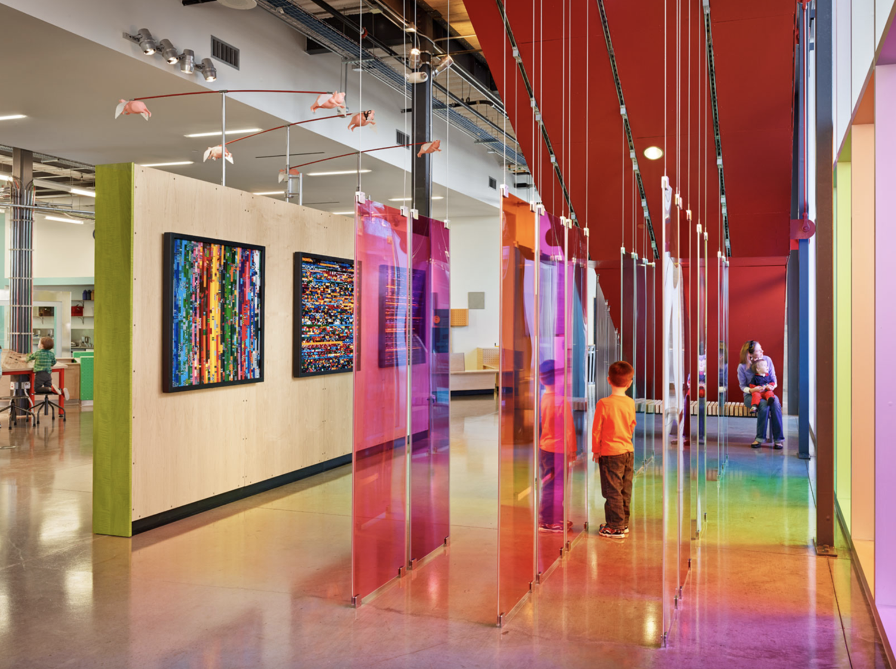
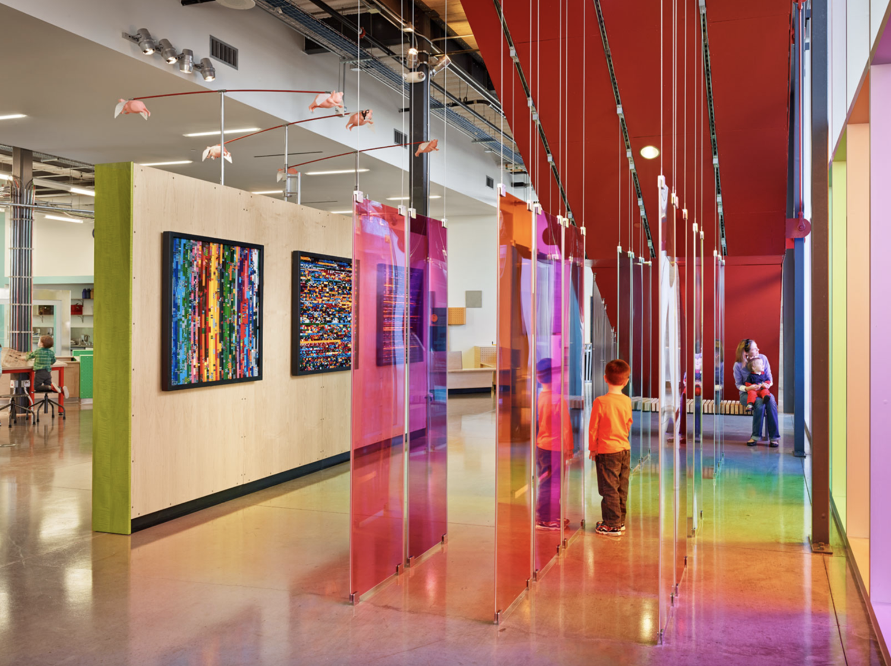

Thinkery
I was the designer for the Thinkery, (formerly the Austin Children’s Museum), and I implemented the new brand across a variety of media to introduce the name, location and building to the community. My goal was to make sure that no matter
where people encountered the brand, it would be a consistent, recognizable and enjoyable experience.
I was part of a team that successfully took on new challenges, increased admission and membership rates and had a lasting and positive impact on the Austin community.
I implemented the Thinkery brand across every touchpoint. I designed deliverables ranging from marketing campaigns and digital assets to exhibit icons and murals. Each piece worked together to create a cohesive and consistent design
strategy that elevated the brand to the public.


 



 
